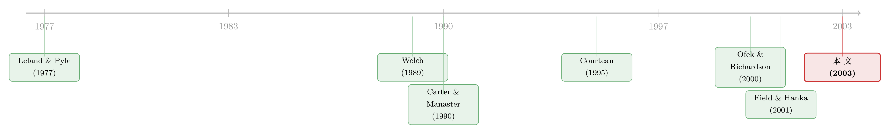

上市这天终于能套现，他却亲手把自己锁住 180 天
本文读的是 Brav & Gompers (2003, Review of Financial Studies)：在 2,794 个 IPO 样本里，作者把「锁定期 (lockup)」为什么存在这件事，掰成三种假说逐一检验，最后落在一个并不那么直觉的答案上——锁定期不是用来「炫耀质量」的信号，而是一份对抗上市后道德风险的承诺。越是事后容易「坑」投资者的公司，锁得越久；而一旦风投、明星投行或一段好行情把这种风险摁下去，内部人就被提前放行。
1 一个反直觉的开场
设想你是一家公司的创始人。熬了很多年，公司终于要 IPO。这是你和早期投资人第一次有机会把纸面财富变成真金白银。按理说，开盘那一刻，你应该恨不得把手里的股票全抛出去才对。
可现实是：几乎所有 IPO 都附带一纸条款，叫锁定期 (lockup)——在招股说明书里白纸黑字写着，公司管理层和上市前的老股东，在公开发行开始后的一段时间（"typically" 180 天）内，未经承销商书面同意，不得直接或间接卖出、做空、质押任何股份。
注意一个细节：这条约定不是任何法律强加的。它既不是 SEC 的规定，也不在《1934 年证券交易法》第 10(b) 条、Rule 10b-5 那套防内幕交易的体系里。它只写在承销协议这一份纯粹的私人合同里。Bartlett (1995) 的原话是，锁定期"prevents a surplus of stock hitting the market all at once"——防止一大堆股票一下子砸到市场上。
于是悖论就出来了：既然法律没逼你，市场也没逼你，为什么上市前的内部人会心甘情愿地同意把自己的钱袋子封上半年？ 这就是 Brav & Gompers 这篇论文要回答的核心问题。
2 三种解释，先摆上桌
要解释一个「自愿戴上的镣铐」，得先想清楚戴它能换来什么。作者把可能的动机归纳为三类。
第一种，信号 (signaling)。 这是最符合直觉的猜测，也最有理论传统。如果公司的真实质量外人看不见，好公司就会担心：投资者分不清好坏，于是不肯出高价。怎么办？Leland & Pyle (1977) 给出的经典答案是——好公司的内部人愿意上市后多留一些股票在手里，因为他们对自己有信心，敢于承担不分散带来的成本。Courteau (1995) 顺着这条线，把锁定期也变成一种信号工具：好公司愿意锁得更久，因为它知道未来股价不会塌；差公司则不敢承诺长锁定，怕被自己拖死。所以信号假说预测：质量越高，锁定期越长。
第二种，承诺 (commitment)。 这是本文真正想推的故事，也是它和信号假说最微妙的分野。这里，公司的事前质量是看得见的；真正看不见的，是上市之后管理层会不会好好干活——也就是上市后的道德风险 (moral hazard)。在锁定期里，内部人卖不掉股票，那么这段时间里通过 SEC 文件、新闻、分析师报告慢慢披露出来的信息，就成了把内部人钉在原地、让他们没法趁信息不对称占投资者便宜的保险。投资者因此更敢认购。
这里的逻辑要拐一个弯，所以请慢一点读：在控制住公司质量之后，那些事前看上去就更容易「坑」股东的公司——年轻的、股价波动大的、低账面市值比 (book-to-market) 的高成长公司、现金流利润率低的公司——反而需要更长的锁定期，才能把投资者哄进来。而如果一家公司已经有了别的「认证」——比如能请到 Kleiner Perkins 这样的顶级风投，或者 Goldman Sachs 这样的明星投行——它就不需要长锁定，因为声誉本身就是一种替代性的承诺机制。
第三种，承销商的市场势力 (underwriter market power)。 这一种最「阴谋论」：锁定期把「提前卖出」的钥匙交到了主承销商手里——内部人想提前套现，要么走承销商的大宗交易，要么干脆做一次增发 (SEO)。无论哪种，承销商都能再赚一笔费用。这个故事预测：控制质量后，高声望的投行反而会强加更长的锁定期，因为它们能凭借声望榨取更多服务费。
留意承诺假说和市场势力假说在投行这件事上的符号正好相反：承诺说「好投行 → 锁得短」（声誉替代承诺），市场势力说「好投行 → 锁得长」（榨取费用）。这一条符号之争，后面会成为判别两种假说的关键。
3 识别策略：让三种假说在符号上「对质」
这篇文章没有一个炫目的自然实验，它的识别力来自一个朴素但有效的思路：把三种假说翻译成对回归系数符号的不同预测，再让数据去裁决。 这正是它效仿 Michaely & Shaw (1994) 检验逆向选择与信号理论时的打法。
作者把锁定期长度的对数作为被解释变量，跑一个横截面回归：
$$ \ln(\text{Lockup}_i) = \beta_0 + \beta_1\,VC_i + \beta_2\ln(\text{MV}_i) + \beta_3\,\text{BM}_i + \beta_4\,\text{CFM}_i + \beta_5\,\text{Rank}_i + \beta_6\,\text{Primary}_i + \varepsilon_i $$
其中 \(VC\) 是风投支持的虚拟变量，\(\text{MV}\) 是 IPO 市值（1992 年不变价），\(\text{BM}\) 是账面市值比，\(\text{CFM}\) 是经营现金流/销售的现金流利润率，\(\text{Rank}\) 是 Carter, Dark & Singh (1998) 的承销商声望排名（1 最低、9 最高），\(\text{Primary}\) 是发行中新股（一级股）所占比例，再加上年份哑变量控制年度效应。
三种假说在这条回归上的「指纹」是： - 信号假说：质量越高锁得越久，所以好投行、风投、大公司应当对应更长锁定期（正号）。 - 承诺假说：这些「认证」是道德风险的替代品，应当对应更短锁定期（负号）；而高波动、低 BM、低现金流利润率的高风险公司锁得更久。 - 市场势力假说：好投行 → 更长锁定期（正号）。
三套预测，在投行系数上彼此打架。数据站哪边，答案就清楚了。
4 数据
样本来自 Securities Data Company (SDC)，初始为 1988–1996 年的 2,871 个 IPO。要求公司在发行后、锁定期到期前能在 CRSP 上找到；剔除封闭式基金、REITs、ADR 和分拆 (carveouts)。日度收益和成交量来自 CRSP，会计数据来自 Compustat，锁定期长度、锁定股数、一级/二级股、发行价来自 SDC。SDC 缺失的锁定期字段，作者一份份翻招股书补——初始有 255 家缺锁定期长度，最终补回 178 家，得到最终样本 2,794 个 IPO。
描述性统计里有几个数字值得记住。锁定期高度标准化：第 10 与第 50 百分位都是 180 天，整整 64% 的合同就是 180 天（这种合同标准化在 IPO 里并不稀奇——Chen & Ritter (1999) 那个著名的「7% 承销费」也是同一类现象）。内部人锁得也很彻底：中位数公司锁住了 93% 的上市后内部人持股，连第 25 百分位的公司都锁了 52%。
而真正预告结论的，是简单的分组对照：按市值中位数（约 7000 万美元）切开，小公司平均锁 321 天，大公司只锁 187 天（差异 p 值 0.00）；高声望投行、有风投支持的发行，锁定期也都显著更短。小公司、缺认证的公司，事前道德风险更高——它们恰恰锁得更久。
5 主要结果：反转出现
回归结果（Table 2）干净地站到了承诺假说这一边。
最稳健的两组系数是市值和声誉。市值对数的系数为 −0.16（t = 19.47），账面市值比的系数为 −0.26（t = 8.61）——大公司锁得短，低 BM 的高成长公司锁得长。风投支持的系数为 −0.11（t = 7.47），现金流利润率系数为 −0.003（t = 1.72，弱）。这些都说，信息不对称越小、事后越不可能坑股东的公司，锁定期越短。
而那个决定性的符号——承销商声誉——是 −0.05（t = 12.15）：高声望投行对应的是更短而非更长的锁定期。 这一下就把市场势力假说否掉了：如果锁定期是投行用来榨费用的工具，好投行应当锁得更长，符号该是正的。数据说不。
还有一个漂亮的旁证：一级股占比的系数为 0.0026（t = 4.67），即二级股（老股东直接套现）卖得越多，锁定期越短。能在 IPO 当场就大量出售老股的公司，本就是信息不对称低的公司，自然不需要长锁定来背书。整条回归的调整 \(R^2\) 约 36%，样本量 2,634。
那信号假说呢？作者另做了若干检验：如果内部人真用长锁定来「signal 质量」，那么锁得久的公司应当更可能调高发行价、或更可能随后做增发去兑现这份声誉。数据没有支持这一点。于是三选一的天平彻底倒向承诺。
把这一节浓缩成一句话：凡是能降低道德风险的东西——大体量、低估值风险、风投背书、明星投行——都让锁定期变短；凡是放大道德风险的东西，都让它变长。 锁定期是一份按风险定价的「老实人保证书」。
6 两个加料的故事：到期跳水与提前放行
承诺假说还有两处可被进一步检验的含义，作者顺手把它们做了，结果同样自洽。
其一，到期日的价格反应。 锁定期的长度和锁定股数在 IPO 时就完全已知。如果市场是理性且能完全预期的，到期那天解锁不该有任何异常收益——哪怕需求曲线向下倾斜，投资者平均也该猜对内部人会卖多少，平均异常收益应为零。可作者发现，解锁前后存在一个显著的 −2% 的价格下跌。这与向下倾斜的需求曲线 (downward sloping demand curves) 加上有成本的套利 (costly arbitrage) 相一致（关于股票需求曲线为什么会向下，可参见《想买走一家公司千分之一的股票，得把价格推高百分之一》与《套利者的资产负债表，给每只股票标了一个价》）。更关键的是，这 −2% 的横截面差异，方向也和承诺假说吻合：越透明的公司（低波动、高声望投行、有盈利、能进增发市场）跌得越少。
其二，提前放行 (early release)。 因为主承销商有权提前解锁，作者去看了到期前的内部人减持。承诺假说预测：只有那些道德风险已大幅消退的公司，才该被允许提前卖。证据正是如此——提前放行与 IPO 到解锁之间更高的超额收益、更多的风投背书、更高的承销商声誉相联系。一段好行情、一个好风投、一家好投行，都是「这家公司不会再坑你了」的信号，于是镣铐被提前打开。
这里也顺带纠正了一桩前人的局限：Field & Hanka (2001) 用一个只有 334 家、跨一年的小样本研究提前减持，而本文用全样本的内部人交易数据，把提前放行的规模和决定因素一起讲清楚了。
7 文献脉络
把这篇论文放回它的坐标系，能看得更清楚它在「修」什么、又在「补」什么。
最早的源头是 Leland & Pyle (1977)：在信息不对称下，内部人保留股权可以充当质量信号。这条线在 1980 年代末被一批 IPO 信号模型接力——Allen & Faulhaber (1988)、Grinblatt & Hwang (1989)、Welch (1989)，核心都是「好公司用某种有成本的动作把自己和差公司分开」。Courteau (1995) 把这套逻辑直接搬到锁定期上，于是有了「锁定期是质量信号」的正统说法。
与此同时，另一条「认证 (certification)」的支流在生长：Carter & Manaster (1990) 证明好投行能降低 IPO 折价，Megginson & Weiss (1991)、Barry et al. (1990) 则在风投身上发现类似的认证效应。这条线为本文「声誉是承诺的替代品」埋下了伏笔。

再往后，几篇几乎同期的文章盯上了解锁日的价格下跌：Field & Hanka (2001)、Ofek & Richardson (2000)、Bradley et al. (2001)。它们大多停在「解释那 −2% 的跳水」这一步。而 Brav & Gompers (2003) 站在的位置是：不只解释到期跳水，而是回到更上游的问题——锁定期一开始为什么会存在、为什么是这个长度、谁会被提前放行——并用一个能区分信号、承诺、市场势力三者的统一框架把它们一并回答。它和「内部人交易」这一更古老的文献（Seyhun, 1986, 1988）也接上了线，记录了 IPO 之后内部人卖出的真实规模。
关于风投在 IPO 里既「认证」又可能「抢功 (grandstanding)」的两副面孔，可参见《「认证」的反面：原来风投把新股「打折」得更狠》；而内部人如何在 IPO 过程中藏起坏信号、为自己谋利，可参见《招股书里那本「公开的暗账」：内部人如何把卖股票的坏消息藏起来》。
8 评论与延伸（Q&A + 研究方向）
(a) 几个可能的疑问
Q：信号假说和承诺假说，到底差在哪？为什么不是一回事？
差在「看不见的是什么」。信号假说里，看不见的是公司的事前质量，锁定期是好公司用来自证质量的工具，所以质量越高锁得越久。承诺假说里，事前质量是看得见的，看不见的是内部人上市后会不会坑你（道德风险），锁定期是用来摁住这种事后行为的保险，所以事前风险越高锁得越久。两者对「质量—长度」的预测方向相反，这正是本文能把它们分开的原因。
Q：用 OLS 跑横截面回归，没有外生冲击，识别可信吗？
这是本文最大的软肋——它本质上是关联，而非干净的因果。但它的说服力来自一个巧妙之处：三种假说在同一个系数（承销商声誉）上预测了相反的符号。当数据明确显示是负号时，市场势力假说就被排除了。它不是靠一个自然实验取胜，而是靠「让对立假说在符号上互相否证」取胜。
Q：锁定期 64% 都是 180 天，几乎是模板条款，那「按风险定价」从何谈起？
正因为大量合同卡在 180 天，真正的信息藏在偏离 180 天的那一部分，以及连续变量（市值、BM、声誉、风投）上。回归的解释力（调整 \(R^2 \approx 36\%\)）说明，长度并非纯模板：小公司平均 321 天对大公司 187 天，这个差距是实打实的。标准化只是基准，定价发生在边际上。
Q：解锁日 −2% 的下跌，会不会只是内部人抛压的机械结果，谈不上「市场无效」？
关键在于这次抛售是完全可预期的——长度和股数 IPO 时就公开了。在一个有效、需求曲线水平的市场里，理性投资者会提前消化，到期日不该有系统性异常收益。出现 −2% 且无法被轻易套利掉（Ofek & Richardson 指出交易成本会吃掉套利利润），恰恰指向向下倾斜的需求曲线加有成本的套利。它是市场微观结构层面的「不完美」，而非交易者的非理性。
Q：如果声誉能替代锁定期，为什么明星投行不干脆把锁定期取消？
因为声誉是程度而非开关。好投行降低但不消除道德风险，所以它对应的是更短而非为零的锁定期。文中脚注还提了一个更微妙的可能：越短的锁定期，投行押上的声誉反而越多——因为一旦解锁后很快爆出坏消息，就说明它尽调没做好。在分离均衡里，高质量投行会给高质量公司更短的锁定期。
Q：这套结论能外推到今天吗？样本毕竟停在 1996 年。
要谨慎。样本横跨的是 1990 年代的承销生态，而承销商声誉与折价的关系本身在 1990 年代发生过反转（Krigman, Shaw & Womack, 2001）。互联网泡沫、双层股权 IPO、SPAC 的兴起都可能改变锁定期的角色。机制（承诺对抗道德风险）大概率仍成立，但具体系数和「谁被提前放行」的画像需要在新样本里重估。
(b) 几个可能的研究问题与提案
1. 把锁定期承诺的逻辑搬到公司债与可转债的「持有期约束」上。 【经济故事】债券发行里也存在类似的事后道德风险——发行后管理层可能掏空、加杠杆、改变投资政策。某些私募债、可转债条款里隐含的限售/限赎安排，是否同样在按事前道德风险定价？【可行性】中。需要把债券契约条款（covenants）文本化，匹配发行人风险特征，识别可借鉴本文「让竞争性假说在符号上对质」的思路；难点在于债券锁定条款远不如 IPO 标准化，样本构建成本高。
2. 外资持有人是否充当「替代性承诺机制」？ 【经济故事】本文说风投、明星投行是道德风险的替代承诺。一个自然的延伸：跨境上市或引入外资机构股东，是否同样让发行人「更不敢坑人」，从而对应更短的锁定期或更宽松的减持约束？【可行性】中。可用跨国 IPO 数据加外资持股，识别上可借助指数纳入（investability）带来的外资准入变化作为外生冲击；挑战是各国锁定期制度差异大，需要分制度环境讨论。
3. 锁定期到期的 −2% 与公司债流动性冲击的对照。 【经济故事】解锁日是一个「完全可预期的供给冲击」，却仍压低价格，指向向下倾斜的需求曲线。公司债市场同样存在可预期的供给事件（到期再融资、评级临界）。把「可预期供给冲击下的价格压力」在股、债两个市场做平行测度，能更干净地分离需求曲线斜率与套利成本。【可行性】高。债券层面有 TRACE 成交数据，事件时点清晰，识别相对干净。
4. 提前放行作为一个「承销商私有信息」的揭示窗口。 【经济故事】谁被提前放行，本质是主承销商在用私有信息「投票」：它认为这家公司道德风险已消退。那么提前放行能否预测公司后续的长期表现、违约或治理事件？【可行性】中。需要逐笔内部人交易数据（Form 144 / 内部人申报）匹配提前放行时点；难点是区分「承销商主动放行」与「公司主动申请」。
5. 双层股权与 SPAC 时代的锁定期重估。 【经济故事】控制权结构和上市方式都在变（双层股权 IPO 卷土重来、SPAC 流行），它们重塑了内部人与外部投资者之间的道德风险结构。锁定期的「按风险定价」逻辑在这些新形态里是强化了还是失效了？【可行性】高。近年数据可得，可直接复制本文回归框架并加入治理结构变量；与本博客《founders 把控制权写进了招股书：双层股权 IPO 为什么卷土重来》的主题天然衔接。
9 我的判断
这篇文章的贡献，不在于发明了什么花哨的方法，而在于问对了问题、并用一个能让三种解释互相否证的框架把它讲透。它把「锁定期」从一个被默认为「防抛压的技术性条款」，重新理解成一份按事前道德风险定价的承诺合同——而且这份合同有替代品（声誉），有提前解约的机制（early release），两者都在数据里得到了印证。逻辑闭环漂亮，结论也经得起一组组符号检验的拷打。
我的主要担忧仍是识别。全篇是横截面关联，没有外生冲击。承销商声誉、风投、市值这些变量彼此高度相关，且都可能与某个未观测的「公司质量」维度纠缠——而「质量」恰恰是信号与承诺两种假说争夺的核心概念。作者靠「投行系数的符号」一刀切开市场势力假说，这很聪明；但把信号与承诺分得这么干净，多少还是依赖「事前质量可观测」这一不易验证的前提。
如果要往下做，我最想看到三样东西：其一，一个能制造锁定期长度外生变动的设定（比如监管或交易所规则变化），把因果坐实；其二，把内部人真实减持的事后表现接上，检验提前放行的公司是不是真的「后来没坑人」；其三，在双层股权、SPAC、跨境上市这些新形态里重估这套定价逻辑——尤其是外资持有人是否构成一种新的承诺机制。锁定期这把锁，锁住的从来不是股票，而是人心里的那点侥幸；而这点侥幸在不同制度、不同投资者结构下值多少钱，仍是一个开放的问题。
参考文献
Allen, F., and G. Faulhaber (1988). Optimism Invites Deception. Quarterly Journal of Economics 103, 397–407.
Barry, C., C. Muscarella, J. Peavy III, and M. Vetsuypens (1990). The Role of Venture Capital in the Creation of Public Companies: Evidence From the Going-Public Process. Journal of Financial Economics 27, 447–472.
Bartlett, J. (1995). Equity Finance: Venture Capital, Buyout, Restructurings, and Reorganizations. John Wiley, New York.
Bradley, D., B. Jordan, I. Roten, and H. Yi (2001). Venture Capital and IPO Lockup Expiration: An Empirical Analysis. Journal of Financial Research (forthcoming).
Brav, A., and P. Gompers (2003). The Role of Lockups in Initial Public Offerings. Review of Financial Studies 16(1), 1–29.
Carter, R., and S. Manaster (1990). Initial Public Offerings and Underwriter Reputation. Journal of Finance 45, 1045–1067.
Carter, R. B., F. Dark, and A. Singh (1998). Underwriter Reputation, Initial Returns and the Long-Run Performance of IPO Stocks. Journal of Finance 53, 285–311.
Chen, H., and J. Ritter (1999). The Seven Percent Solution. Journal of Finance 55, 1105–1131.
Courteau, L. (1995). Under-Diversification and Retention Commitment in IPOs. Journal of Financial and Quantitative Analysis 30, 487–517.
Field, L., and G. Hanka (2001). The Expiration of IPO Share Lockups. Journal of Finance 56, 471–500.
Grinblatt, M., and C. Hwang (1989). Signaling and the Pricing of New Issues. Journal of Finance 44, 383–420.
Krigman, L., W. Shaw, and K. Womack (2001). Why Do Firms Switch Underwriters? Journal of Financial Economics 60, 245–284.
Leland, H., and D. Pyle (1977). Informational Asymmetries, Financial Structure, and Financial Intermediation. Journal of Finance 32, 371–387.
Megginson, W., and K. Weiss (1991). Venture Capitalist Certification in Initial Public Offerings. Journal of Finance 46, 879–903.
Michaely, R., and W. Shaw (1994). The Pricing of Initial Public Offerings: Tests of Adverse Selection and Signaling Theories. Review of Financial Studies 7, 279–319.
Myers, S., and N. Majluf (1984). Corporate Financing and Investment Decisions When Firms Have Information That Investors Do Not Have. Journal of Financial Economics 13, 187–221.
Ofek, E., and M. Richardson (2000). The IPO Lock-up Period: Implications for Market Efficiency and Downward Sloping Demand Curves. Working paper, NYU.
Seyhun, H. (1986). Insiders' Profits, Costs of Trading, and Market Efficiency. Journal of Financial Economics 16, 189–212.
Shleifer, A. (1986). Do Demand Curves for Stocks Slope Down? Journal of Finance 41, 579–590.
Welch, I. (1989). Seasoned Offerings, Imitation Costs, and the Underpricing of Initial Public Offerings. Journal of Finance 44, 421–449.